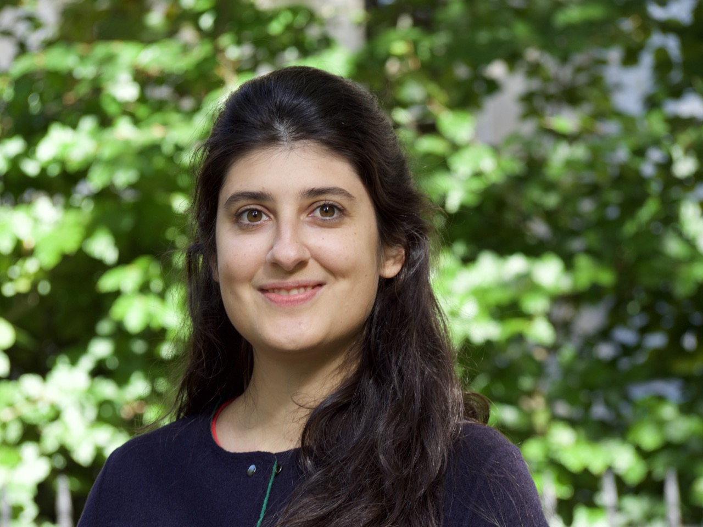

Soy profesora asistente en el Departamento de Economía de la Universidad de Gotemburgo e investigadora afiliada al LSE Hub for Equal Representation. Durante el ciclo 2025-2026 realicé una estancia posdoctoral en el Stone Centre de University College London (UCL). Obtuve el doctorado en Economía por la London School of Economics en 2025.
Mi investigación se centra en la economía de la familia, la economía de género y la economía del desarrollo. Estudio cómo la formación de la familia (la vida en pareja, la fecundidad y la maternidad) incide en la vida económica de las mujeres y en su exposición a la violencia. Para ello, combino métodos cuasiexperimentales con modelos económicos sencillos. Mi objetivo es entender qué restricciones enfrentan las mujeres dentro de sus hogares y qué políticas públicas pueden ayudar a reducirlas.
- Correo electrónico
- gabriela.deschamps@gu.se
- Adscripción
- Departamento de Economía, Universidad de Gotemburgo
- @gabydesch